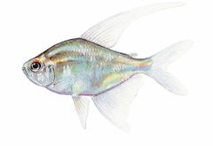
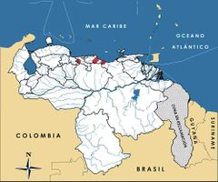

Moenkhausia pittieri
| Tetradiamante | |
|---|---|
|  | |
| Riesgo de extinción | |
 Vulnerable (UICN) | |
| Clasificación científica | |
| Reino: | Animalia |
| Filo: | Chordata |
| Clase: | Actinopterygii |
| Orden: | Characiforme |
| Familia: | Characidae |
| Género: | Moenkhausia |
| Especie: | Moenkhausia pittieri |
| Nombre binomial | |
|
Moenkhausia pittieri Eigenmann, 1920 | |
| Distribución | |
|
 Mapa de distribución de Moenkhausia pittieri | |
Contenido
Información de Evaluación
- Categoría y Criterio Regional: Vulnerable B1ab(iii,iv)
- Fecha de Evaluación Regional: 2015
- Evaluadores: Jesús Morales-Campos y Ariany García-Rawlins
- Categoría y Criterio Global: No Evaluado
Justificación
Evaluaciones Previas
1999: En Peligro (EN)
2008: Vulnerable (VU)
Información General
Nombres comunes
Tetradiamante, bobita, diamond tetra, diamond characin, Pittier's tetra.
Notas taxonómicas
Sinónimos
Descripción
Pez de talla pequeña, mide hasta 6 cm de longitud estándar (desde la punta del hocico hasta la base de la aleta caudal). Se distingue de otras especies del género porque el macho adulto tiene las aletas dorsal y ventral alargadas en un filamento. Su coloración es clara, broncínea, con destellos brillantes y exhibe una franja negra horizontal muy tenue que se extiende aproximadamente desde la región humeral hasta el pedúnculo caudal (Schultz 1944b).
Distribución
Especie endémica restringida a las cuencas del lago de Valencia, ríos Tuy y Guapo, en la región centro-norte de la vertiente del Caribe (Schultz 1944b). En 1986 se encontró en la cuenca del lago de Valencia, en San Diego, estado Carabobo; después fue localizada en la del Tuy, en los ríos Urba y Panaquire; quebrada Cupata (afluente del río Taguaza), quebradas Querepe y Caraballo (subcuenca del río Merecure) y en el embalse Taguaza, todas localidades situadas en el estado Miranda (Marrero y Machado-Allison 1990, Campo y Suárez 1996, Marnr 1996, Rodríguez-Olarte 1996, Ortaz et al. 2002). En las inmediaciones del río Guapo se le reporta en el afluente del embalse homónimo, en el río Aragua, y en la confluencia de los ríos Guapo y Guayas, tributarios del embalse El Guapo, estado Miranda (Solórzano et al. 1997). Habita en aguas de piedemonte desde los 70 hasta los 100 m.
- Sistema: Dulceacuícola
- Bioregión:
- Intervalo altitudinal (m): Temporalmente sin información
- Endémica: Sí
Situación
Según diversos reportes, se ha extinguido en los ríos Limón, San Diego, Ereigüe y Güey, pero algunos autores indican la persistencia de poblaciones aparentemente viables en la cuenca del Tuy (Royero 1992, Fernández-Badillo y Lugo 1994). Se desconoce el tamaño poblacional de la especie, aunque se estima que está presente en 2846,34 km2. Comercializadores de peces ornamentales en los estados Carabobo y Aragua consideran que sus poblaciones están diezmadas en el lago de Valencia. En un estudio de siete tributarios de esta cuenca (Cúpira, San Diego, Vigirima, Guayabita, Güey, El Paya y El Limón), se colectó sólo en dos localidades (López-Rojas y Bonilla-Rivero 2000). Por el contrario, en la cuenca del río Tuy las poblaciones están en mejor estado, específicamente en la región de Barlovento (estado Miranda), en los ríos Urba, Merecure y quebrada Cupata, afluentes del río Taguaza (Marrero y Machado-Allison 1990, Campo y Suárez 1996, Rodríguez-Olarte 1996). En el embalse Taguaza se considera una especie abundante (Ortaz et al. 2002). En ediciones anteriores del Libro Rojo de la Fauna Venezolana fue clasificada En Peligro y catalogada erróneamente como endémica de la cuenca del lago de Valencia (Rodríguez, J. P. y Rojas-Suárez 2003, Royero 1992, Mago 1978).
- EOO (km2): 2846,34
- AOO (km2): Temporalmente sin información
- Tendencia Poblacional: Desconocida
Amenazas
La principal amenaza que se cierne sobre Moenkhausia pittieri es la destrucción de su hábitat, especialmente en los ríos de la cuenca del lago de Valencia, donde el crecimiento urbano, agrícola e industrial ha ocasionado que las poblaciones de la especie se hayan reducido significativamente (López-Rojas y Bonilla-Rivero 2000). La introducción de petenias (Caquetaia kraussii) representa otro peligro de importancia (Royero y Lasso 1992, Señaris y Lasso 1993). En las cuencas del Tuy y Guapo se desarrollan actividades de agricultura de cierta intensidad, sin embargo, el ecosistema acuático ha conservado bastante bien su condición natural (Marrero y Machado-Allison 1990). En estos dos sitios es sometida a una fuerte extracción como pez ornamental, sin ningún tipo de control. Además, algunos fenómenos naturales han afectado secciones de su distribución, como el deslave en la cuenca del río El Limón (estado Aragua) en 1987 y la destrucción de la represa de El Guapo (estado Miranda) en 1999.
Conservación
En nuestro país su comercio como especie ornamental se encuentra regulado (Venezuela 1992a). La cuenca del lago de Valencia está protegida como «Área Crítica con Prioridad de Tratamiento», y posee un Plan de Ordenamiento y Reglamento de Uso y normas técnicas para el control de la calidad del agua (Venezuela 1979, Venezuela 1999, Venezuela 2000). Se sugiere la recuperación y conservación de las cuencas altas de los tributarios de la que desemboca en el lago de Valencia, donde se tenga conocimiento de la existencia actual o pasada de Moenkhausia pittieri. Se debe estimular su cría en cautiverio para la repoblación de hábitats naturales con condiciones adecuadas. Hoy día se le cría en cautiverio con fines ornamentales en el estado Carabobo. En los Estados Unidos, Europa y Asia su cultivo y comercialización como pez ornamental presenta una demanda importante. Se sugiere la realización de estudios que permitan estimar el tamaño de sus poblaciones naturales y desarrollar programas de educación ambiental dirigidos a sensibilizar al público. En particular, es preciso desarrollar el programa de educación ambiental contemplado en el Plan de Ordenamiento y Reglamento de Uso para la cuenca del lago de Valencia (Venezuela 2000).
Autorías
Autores originales
Marcos A. Campo Z., Mario Ortaz, Carlos A. Lasso y Juan C. Rodríguez
Colaboradores
Ilustrador
Astolfo Mata
Referencias
- Campo, M. y Suárez, R. (1996). Inventario preliminar de ictiofauna en el área del embalse Taguaza, cuenca del río Tuy, estado Miranda, e impactos potenciales de la represa sobre los peces. PT, Serie Informes Técnicos DGF/IT/386. Dirección General de Fauna, Ministerio del Ambiente y de los Recursos Naturales. Caracas. 17 páginas + anexos.
- Campo Z., M. A., Ortaz, M., Lasso, C. A. y Rodríguez, J. C. (2015). Tetradiamante, Moenkhausia pittieri. En: J.P. Rodríguez, A. García-Rawlins y F. Rojas-Suárez (eds.) Libro Rojo de la Fauna Venezolana. Cuarta edición. Provita y Fundación Empresas Polar, Caracas, Venezuela. Recuperado de: animalesamenazados.provita.org.ve/content/tetradiamante Vie, 20/04/2018 - 13:11
- Fernández-Badillo, A. y Lugo, M. E. (1994). Cambios en la composición de la ictiofauna del río Güey. Revista Facultad Agronomía 20(34): 133-142.
- López-Rojas, H. y Bonilla-Rivero, A. (2000). Antropogenically induced fish diversity reduction in Lake Valencia Basin, Venezuela. Biodiversity and Conservation 9: 757-765.
- Mago, F. (1978). Los Peces de Agua Dulce de Venezuela. Cuadernos Lagoven. Editorial Cromotip. Caracas. 35 pp.
- Marnr. (1996). Inventario de fauna silvestre e ictiofauna en el área del embalse Taguaza: Estimación preliminar del impacto ambiental sobre la fauna. Informe. Servicio Autónomo Profauna, MARNR. Maracay, Venezuela. 32 páginas + anexos.
- Marrero, C. y Machado-Allison, A. (1990). Inventario y notas ecológicas de los peces de los ríos Panaquire, Urba y Yaguapa (cuenca del río Tuy) estado Miranda, Venezuela. Biollania 7: 55-82.
- Ortaz, M., González, E., Peñaherrera, C. y Carrillo, V. (2002). Ictiofauna del embalse Taguaza ubicado en el Parque Nacional Guatopo (Estado Miranda). Informe Técnico. Hidrocapital. Caracas. 42 pp.
- Rodríguez, J. P. y Rojas-Suárez, F. (1999). Libro Rojo de la Fauna Venezolana, segunda edición. PROVITA, Fundación Polar. Caracas. 444 pp.
- Rodríguez, J. P. y Rojas-Suárez, F. (2003). Libro Rojo de la Fauna Venezolana (2a ed. reim.). Provita, Fundación Polar. Caracas. 472 pp.
- Rodríguez, J. P. y Rojas-Suárez, F. (Eds.) (2008). Libro Rojo de la Fauna Venezolana, tercera edición. Provita y Shell Venezuela, S. A. Caracas, Venezuela. 364 pp.
- Rodríguez-Olarte, D. (1996). Notas sobre los peces del río Merecure, cuenca del río Tuy, Edo. Miranda. Nuevos reportes, aspectos sobre su ecología y situación actual. Biollania 12: 49-62.
- Royero, R. (1992). Peces de Venezuela. Aquarium de Valencia J. V. Seijas. Valencia, Venezuela. 221 pp.
- Royero, R. y Lasso, C. (1992). Distribución actual de la mojarra de río Caquetaia kraussii (Steindachner, 1878) (Perciformes: Cichlidae) en Venezuela: un ejemplo del problema de la introducción de especies. Memoria de la Sociedad de Ciencias Naturales La Salle 52(138): 163-180.
- Schultz, L. P. (1944b). The fishes of the family Characinidae from Venezuela, with descriptions of seventeen new forms. Proceeding United States National Museum 95(3181): 235-367.
- Señaris, J. C. y Lasso, C. (1993). Ecología alimentaria y reproductiva de la mojarra de río Caquetaia kraussii (Steindachner 1878) (Cichlidae) en los Llanos inundables de Venezuela. Publicaciones de la Asociación Amigos de Doñana 2: 1-58.
- Solórzano, E., Campo, M. y Bolaños, J. (1997). Evaluación de la ictiofauna del embalse El Guapo, Edo. Miranda, con consideraciones para la siembra de peces. (PT) Serie Informes Técnicos Profauna/IT/18. Profauna, Ministerio del Ambiente y de los Recursos Naturales Renovables (MARNR). Caracas. 21 páginas + anexos.
- Venezuela. (1979). Presidencia de la República. Decreto Nº 304 del 20/09/79: Área crítica con prioridad de tratamiento de la cuenca hidrográfica del lago de Valencia. En: Gaceta Oficial Nº 31.829 (26 sep. 1979). Caracas, Venezuela.
- Venezuela. (1992a). MAC. Resolución Nº 52 del 12/03/92: Producción, captura, investigación y comercialización de Ictiofauna con valor ornamental. En: Gaceta Oficial Nº 34.921 (12 mar. 1992). Caracas, Venezuela.
- Venezuela. (1999). MAC. Resolución Nº DM/012 del 20/01/99: Regulación para la extracción y plan de manejo experimental del recurso botuto o guarura (Strombus gigas). Ministerio de Agricultura y Cría (MAC). En: Gaceta Oficial Nº 36.656 (8 mar. 1999). Caracas, Venezuela.
- Venezuela. (2000). Presidencia de la República. Decreto Nº 964 del 27/08/00: Plan de ordenamiento y reglamento de uso del área crítica con prioridad de tratamiento de la cuenca del lago de Valencia. En: Gaceta Oficial Nº 37.050 (4 oct. 2000). Caracas, Venezuela.